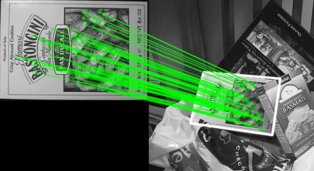

Projekt 5 - Detekce významných bodů na Raspberry Pi 2 (vedoucí D. Davídek) |
ZadáníCílem projektu je implementovat algoritmy pro detekci významných bodů, jejich popis a korespondenci ve dvou obrazech na výpočetním modulu Raspberry Pi 2 s využitím alespoň dvou algoritmů. Ve výsledcích práce je nutné provést diskuzi na téma výhod a nevýhod jednotlivých algoritmů a porovnat je s jedním dalším ne nutně implementovaným algoritmem. Diskuze typu a vlastností scény a charakteru předlohy vhodné pro robustní detekci a korespondenci pomocí jednotlivých algoritmy s návazností na výstupy realizovaných algoritmů (ne/invariantnost vůči geometrickým a jasovým transformacím). Software:
|
ObrazyIlustrace 1: Ukázka vstupního obrazu (vlevo) a výstupní matice (vpravo schematiocky)

|
Klíčová slovafeature detection, feature extraction, feature matching, opencv, raspberry pi |
Odkazy[1] Install OpenCV 3 (optionally with Python) on Raspbian |